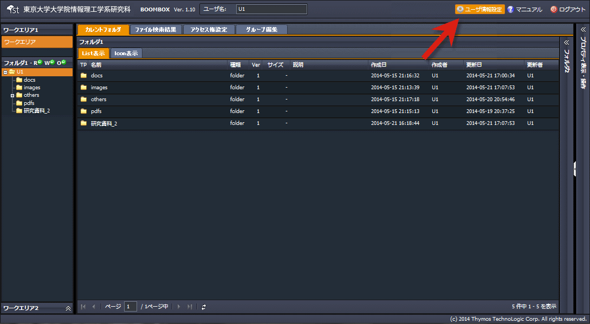
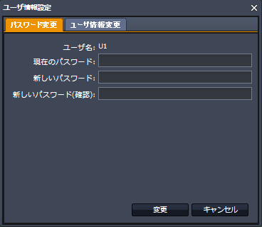
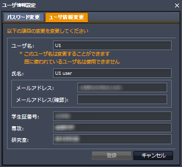

SecretFilesマニュアル
4.SecretFilesサービス(操作編)
4.2.12 ユーザ情報設定
ユーザ情報の設定、編集の手順を説明します。
(1) トップバーの右側にある『ユーザ情報設定』をクリックします。 
(2)【ユーザ情報設定】のポップアップウインドウが開く
【パスワード変更タブ】：パスワードを変更することができます。

【ユーザ情報変更タブ】：以下の情報を変更することができます。
・ユーザ名
・氏名 ・メールアドレス
・学生証番号
・専攻
・研究室
※ユーザ名を変更後、ホームフォルダの名称は自動的に変更されませんので、必要に応じて手動にて変更してください。
